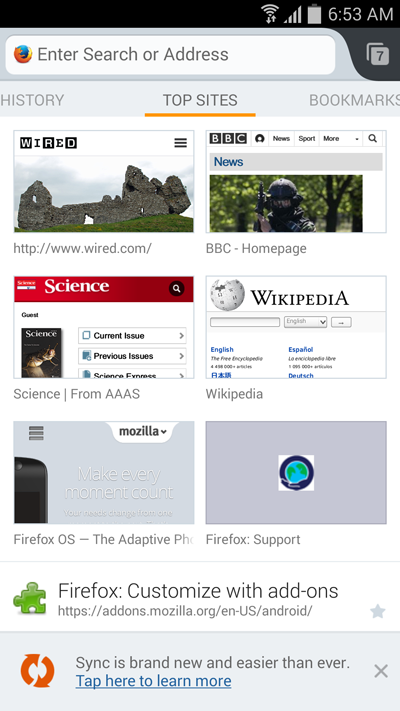

Mozilla 今日正式發表全新改版 Firefox (Firefox 29)，也同步發表 Firefox 行動版 (Firefox for Android)。Firefox for Android 現具備新的首頁與分享功能，除了能更快、更迅速的前往你最愛的網站之外，也達到前所未有的高度自訂功能。
Mozilla 也另外推出 Firefox Accounts，藉以強化 Firefox Sync 同步功能，讓使用者能帶著 Firefox 到處走。簡單易用的 Firefox Sync，將跨越使用者的桌機與 Android 行動電話/平板電腦，迅速且安全的同步所有資料，包含書籤、密碼、表單資料、歷史紀錄、已開啟的分頁等。

使用者可自訂首頁畫面上的書籤、閱讀清單、歷史記錄、最常瀏覽等選單，並選擇自己要預設顯示的選單。只要開啟新的分頁或啟動新的瀏覽作業，就會顯示自訂的首頁畫面，讓使用者能更快瀏覽最愛的網站。另可隱藏不常使用的網頁，或隱藏所有網頁而隨時取用全新分頁。

Firefox for Android 除了能輕鬆自訂之外，亦可針對使用者最常瀏覽的社交網站，訂定如文章、影片、圖片等內容的分享順序。選單列現更提供最常用兩大分享服務 (包含 Facebook 與 Twitter) 的彩色圖示，以及使用者的電子郵件，能更快向親友分享你喜歡的內容。
Firefox for Android 現提供超過 30 種語言版本，另即將加入新的語言。
更多資訊：
- 進一步了解 Windows、Mac、Linux 版 Firefox